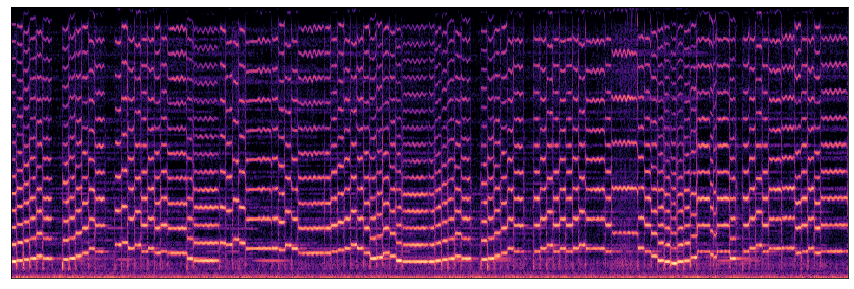
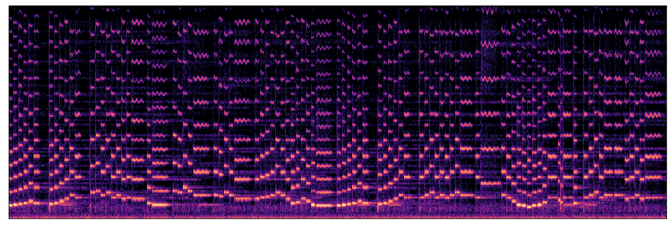

Back to Main Page
Molto Vibrato: Note-based Expressive Control
Realistic Score-to-audio instrument performance synthesis is a challenge task, especially when expressive performance expressed in subtle changes pitch, dynamic etc. which makes performance natural. In this work, a controllable neural MIDI synthesis system is proposed. Unlike previous works which learn a mapping directly from MIDI to acoustic features, the proposed system first generates expression control parameters for each note, then predicts frame-wise synthesizer parameters and synthesize audio using DDSP module. By designing the system in a hierarchical and objective-oriented manner, the proposed system can generate realistic performance audio, while enabling post-hoc user edit of the synthesis result.

By first automatically synthesize a performance then interactively edit by human expert, the proposed model is capable of generating realistic performance piece from only MIDI score:
| Phantom | Tango Por una Cabeza | Viva La Vida |
|---|---|---|
Without human editing, the model can also automatically synthesize good performance in various inetrument with only MIDI score as input:
Not only the model generates realistic expression in performance, the model also synthesize other sounds of real human playing an instrument, which makes the synthesis more realistic. For example, please notice in "Isabella's Lullaby - Flute", one can hear the breathing sound being synthesized.
| Isabella's Lullaby - Flute | Cannon in D - Cello | La vie En Rose - Trumpet |
|---|---|---|
The proposed system can also synthesize realistic ensemble performance in a wide range of instruments:
| Bach Quartet - String Set | Bach Quartet - Brasswind Set | Bach Quartet - Woodwind Set |
|---|---|---|
The scalar note expression controls in the proposed system corresponds to different aspect of the performance. Manually adjust the note expression controls can enable wide range of controls on expression and articulations of the performance.
To show the capability of our model on manually adjusting expressive performance, here we manually edit the note expression controls of a piece based on model prediction to make the violin performance into a totally different interpretation. In the edited version, the violin is playing all note in staccato.
**Staccato: performed with each note sharply detached or separated from the others.
Tango Por una Cabeza, Violin - Automatic Generation
Tango Por una Cabeza, Violin - Automatic Generation + All Staccato
| Tango Por una Cabeza, Violin - Automatic Generation | Tango Por una Cabeza, Violin - Automatic Generation + All Staccato |
|---|---|